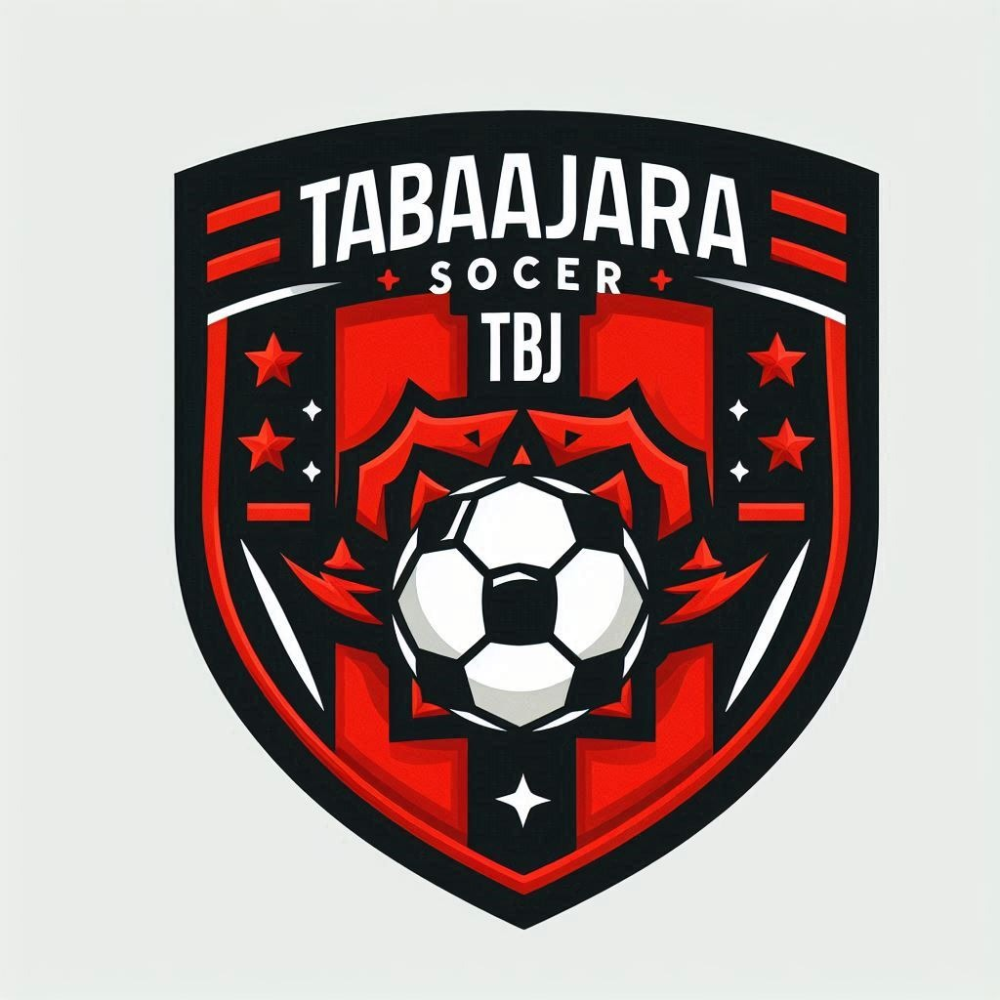
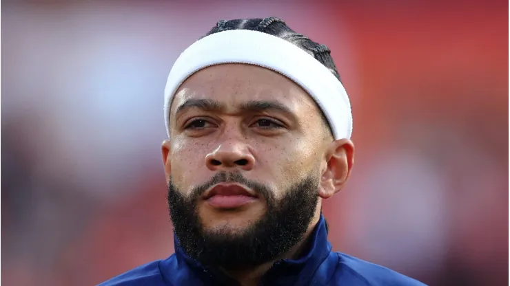
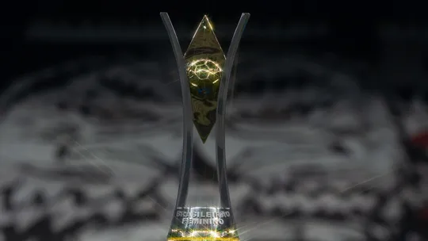

☰
TBJ SOCCER

Brasileirão
Copa do Brasil
Paulista
Carioca
Mineiro
Formulario
Criadores
Bem vindo ao site do Tabajara Soccer. Aqui você verá notícias e informações sobre o futebol brasileiro.
Veja mais!

Depay vai jogar no Brasil: Atacante assina contrato de 2 anos e será anunciado por campeão da Libertadores.
Chelsea é o clube que mais gastou em reforços na última década: R$ 17 bilhões.
Com Fabrício Bruno e quatro desfalques, seleção brasileira treina para enfrentar o Paraguai.
Paulinho, ídolo do Corinthians e jogador de duas Copas do Mundo, anuncia a aposentadoria
São Paulo decide pedir anulação de jogo contra o Fluminense.

Brasileirão Feminino define finalistas neste domingo; veja onde assistir às semis!
Há vida no Fluminense sem Arias? Comentaristas analisam importância do colombiano em 2024!
Grêmio entrará com pedido de efeito suspensivo para Renato e evita definir "substituto"
Léo volta ao time titular para jogos decisivos e ganha apoio de companheiros e diretoria do Vasco
Com desfalques por Data Fifa, Ramón ensaia Corinthians para jogo com o Juventude
Dorival vê Vini Júnior sofrendo cobrança semelhante à de Neymar na Seleção e prega paciência!
Neymar vai precisar de mais dois meses de tratamento, diz jornal saudita!
Produzido por:
Vinícius Oliveira Dinis Dias
Matheus de Moura Holanda